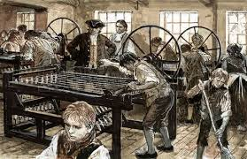
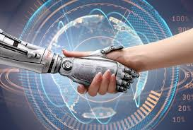

A evolução da tecnologia
A tecnologia tem evoluído significativamente ao longo dos anos, impactando diversas áreas da vida.
Início da Tecnologia
O início da tecnologia remonta aos tempos antigos, com invenções simples como a roda e ferramentas de pedra.

Ferramentas Básicas
As primeiras ferramentas foram feitas de pedra e eram usadas para tarefas básicas como cortar e caçar.
A Invenção da Roda
A invenção da roda foi um marco importante que facilitou o transporte e o comércio.
Revolução Industrial
A Revolução Industrial trouxe avanços tecnológicos significativos, com a mecanização de muitos processos.
Máquinas a Vapor
As máquinas a vapor permitiram a produção em massa e a criação de novas indústrias.
Impacto na Sociedade
A Revolução Industrial mudou a sociedade, aumentando a urbanização e criando novas oportunidades de emprego.
Era da Informação
Com o advento dos computadores e da internet, a Era da Informação transformou a forma como comunicamos e trabalhamos.
Computadores Pessoais
Os computadores pessoais tornaram a tecnologia acessível a um grande número de pessoas.
Internet e Conectividade
A internet revolucionou a comunicação e o acesso à informação, conectando pessoas ao redor do mundo.
Tecnologias Emergentes
Tecnologias como inteligência artificial, robótica e biotecnologia estão moldando o futuro.
Inteligência Artificial
A IA está sendo usada em diversas áreas, desde a saúde até os transportes.
Ética e IA
Questões éticas em torno da IA estão sendo debatidas, especialmente em relação à privacidade e segurança.